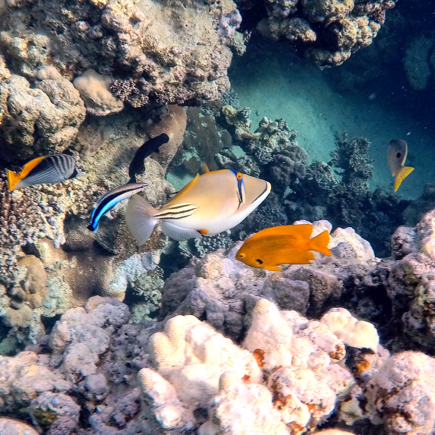
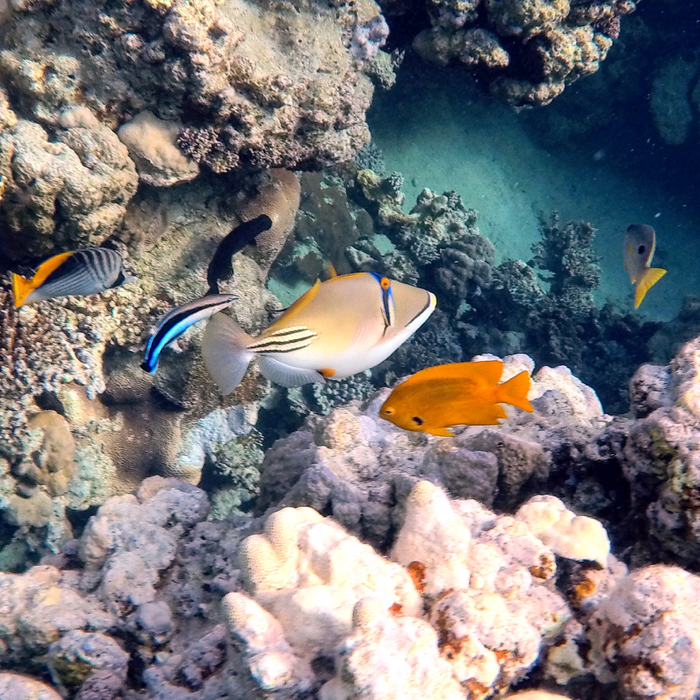
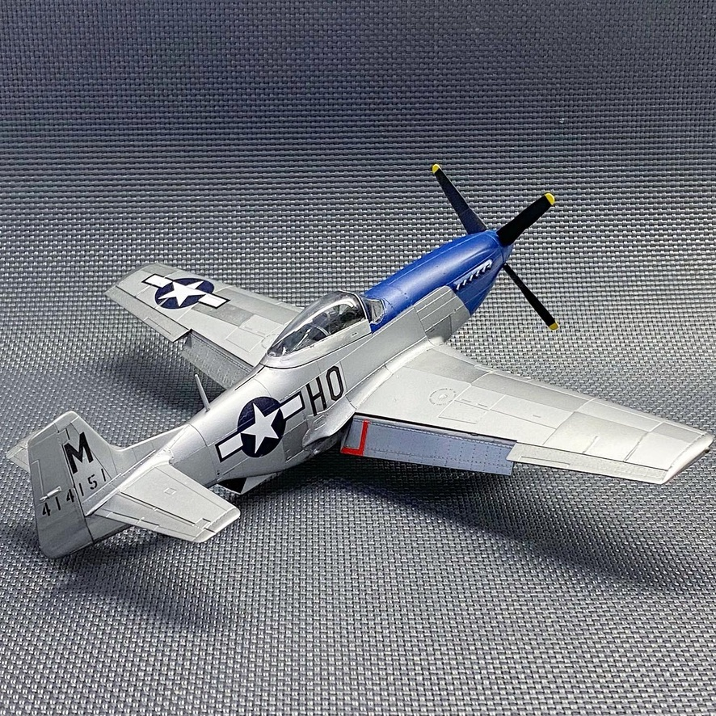

Про мене
Радий вітати на сторінці з моїм резюме.
Зараз я лише розпочинаю курс Front-End розробки. Не зважаючи на те, що мій попередній досвід зовсім інший, я буду старатись.
Далі трохи інформації про мене.
Освіта
| 2022 |
Курс Front-End розробки
|
Академія Beetroot, Україна |
| 2013-2015 |
Курс початкової підготовки транспортного пілота
|
Авіаційна Школа Адрія, Любляна, Словенія |
| 2007-2013 | Ступінь Магістра з Телекомунікацій | Інститут Телекомунікаційних Систем НТУУ "КПІ" |
Знання мов
| Українська | Рідна мова |
| Англійська | Професійний рівень (ICAO 5) |
| Російська | Професійний рівень |
| Іспанська | Початковий рівень |
Досвід
| 2015 до тепер |
Другий пілот, Міжнародні
Авіалінії України
|
| 2011-2013 |
Молодший інженер з експлуатації транспортної мережі в ТОВ Астеліт (Lifecell)
|
Мої Хобі
Я дуже полюбляю подорожувати та фотографувати.


Взимку мені подобається кататись на сноуборді, в влітку плавати.
 


Я будую маштабні моделі.


А у вільний від воїн та епідемій час пілотую пасажирський літак...


Портфоліо
Моє портфоліо перебуває у розробці, будь ласка, зайдіть пізніше.
¯\_(ツ)_/¯
Контакти
Ви можете зв'язатись зі мною:
andrewsamoiliuk@gmail.com+380-(50)-357-23-00
Andrii Samoiliuk
Asamoiliuk